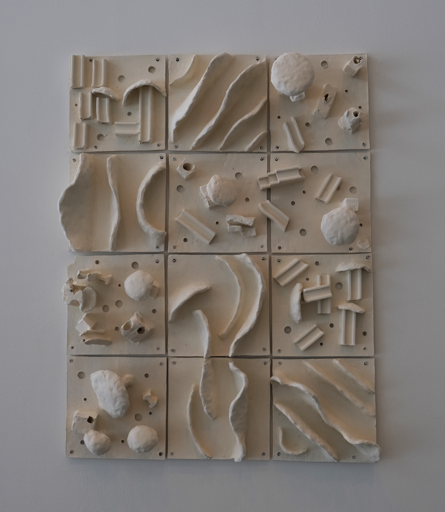

Enveloped, devoured, night veiling one's head, fungi overtaking landscapes, we are always in a battle with ourselves, with time, with daylight. I wanted to capture the inner structures of our minds like a city, taken over by an affliction or, more positively, by those rare breakthrough thoughts; thoughts that change one's perception of life, whether that seed is planted through a book, a conversation, a movie — its fungal qualities permeate each structure within our minds.
Mushrooms break through buildings, through I-beams, through the grid. There is a sense of destruction and life; from the old comes new; a natural cycle is depicted through the ceramic grid as a rigid form returns to a natural form. Through the piece is a sense of flow, a landscape; it is the unbreakable tide of time, caressing the adjacent tiles as they merely pass through, specks in an eternity.
The uniformity of the grid is central to the belief that there is no avant-garde, no eccentricity, without normativity. By providing this structure to the work, I allow each tile to speak for itself, sometimes interacting with other tiles, sometimes standing steadfast in its individuality.